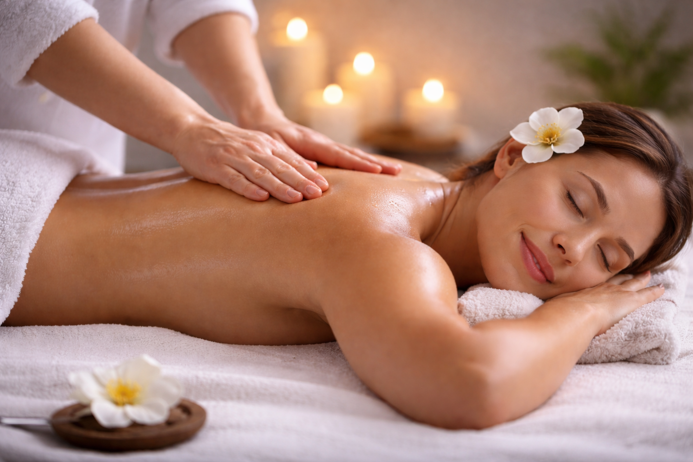
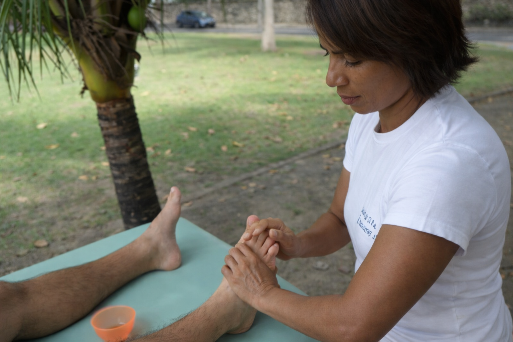

Atendimento humano, consciente e personalizado.
Acredito que cada corpo carrega sua própria história e responde de forma única ao cuidado. Por isso, meu trabalho é guiado pela escuta, pela presença e pelo respeito ao tempo de cada pessoa. Vejo a massoterapia como um encontro: um momento de pausa, reconexão e atenção verdadeira. Mais do que aliviar tensões físicas, a massoterapia também cuida da mente e das emoções, oferecendo um cuidado completo que renova e acalma. Acredito que o cuidado com o corpo impacta diretamente a forma como nos sentimos, nos relacionamos e atuamos no dia a dia — inclusive no ambiente de trabalho.
Explore suas opçõesSou massoterapeuta há mais de 30 anos e exerço essa profissão com amor e dedicação. Ao longo da minha trajetória, atendi pessoas em diferentes momentos e contextos, tanto em atendimentos individuais quanto em eventos corporativos e esportivos. Trabalho com diferentes faixas etárias, sempre respeitando as necessidades e o tempo de cada corpo. Estou em constante aprendizado, buscando aprimorar meus conhecimentos para oferecer um atendimento cada vez mais cuidadoso e consciente. Para mim, a massoterapia é um caminho de bem-estar e equilíbrio, capaz de transformar a forma como nos sentimos no dia a dia, no âmbito pessoal e também profissional.
Conheça minha trajetória
A massagem sueca é uma técnica clássica que utiliza movimentos suaves e ritmados para promover relaxamento profundo e bem-estar. Ideal para aliviar o estresse, melhorar a circulação e proporcionar uma sensação de leveza no corpo.

A massagem terapêutica é focada no alívio de dores e tensões musculares, promovendo recuperação e equilíbrio corporal. Com técnicas personalizadas, ajuda a melhorar a mobilidade, reduzir o estresse e proporcionar bem-estar físico e mental.

A drenagem linfática é uma técnica suave que estimula o sistema linfático, ajudando a reduzir inchaços e eliminar toxinas do organismo. Com movimentos leves e ritmados, promove sensação de leveza, melhora a circulação e contribui para o bem-estar geral.
“Sandra é uma tremenda profissional e estou com ela até hoje! Adoro!!!”
Silvia R.“Maravilhosa!! Super competente, com mãos de fada!”
Suzane F.“Sandra é uma profissional maravilhosa, energia ótima e mãos perfeitas! Super indico.”
Gabriela P.“Maravilhosa! Mãos milagrosas!”
Magali V.“Sandra é uma excelente profissional que, além da técnica, é acolhedora e atenciosa. Faz seu trabalho com muito amor e dedicação. Super recomendo. ❤️”
Lina F.“Como Gerente de Eventos da Coca-Cola Brasil, Sandra foi presença constante em diversos eventos corporativos, como o Camarote da Coca-Cola na Sapucaí, Festival de Parintins e convenções de fabricantes. É uma excelente profissional, séria e comprometida com o trabalho, responsável pelo bem-estar de muitos executivos. Recomendo fortemente!”
Elda G. — Evento Corporativo“Excelente profissional. Resolveu minhas encrencas musculares durante 10 anos. Recomendo fortemente!”
Norman B.Entre em contato para agendar uma sessão individual ou para conversar sobre atendimentos em empresas, eventos e ações de bem-estar. Será um prazer entender sua necessidade e pensar na melhor forma de cuidar.
AtendimentoAgendamentos com hora marcada
Instagram@sandradesamassoterapeuta
Facebook@sandradesamassoterapeuta
Contatosandradesamassoterapeuta@gmail.com
(21) 99919-2014